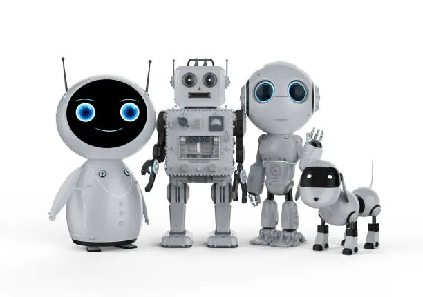

Les Différents Types de Robots
Les robots sont classés selon leur utilité et leur forme. Voici les
principales catégories :
-
Les Robots Industriels :On les trouve dans les
usines comme celles de Toyota ou Tesla. Ils servent à assembler des
voitures, souder, peindre… Ils sont rapides et très précis.
-
Les Robots Domestiques : Ils nous aident à la
maison, comme les aspirateurs automatiques ou les robots de cuisine.
Par exemple Roomba. Il nettoie la maison automatiquement 🧹.
-
Les Robots Humanoïdes : Ils ressemblent à des êtres
humains (tête, torse, bras, jambes). Ils sont souvent utilisés pour
la recherche ou l'assistance aux personnes âgées.
-
Les Robots Médicaux : Ils assistent les chirurgiens
pour faire des opérations très précises.Comme le da Vinci Surgical
System. Ils assistent les médecins pendant les opérations
chirurgicales avec une grande précision.
-
Les Robots de Service : Ils travaillent dans les
hôtels, les restaurants ou les aéroports pour aider les clients. Par
exemple, Pepper.
-
Robots avancés (intelligents): Développés par des
entreprises comme Boston Dynamics. Certains robots peuvent marcher,
courir et garder l'équilibre comme un humain.
